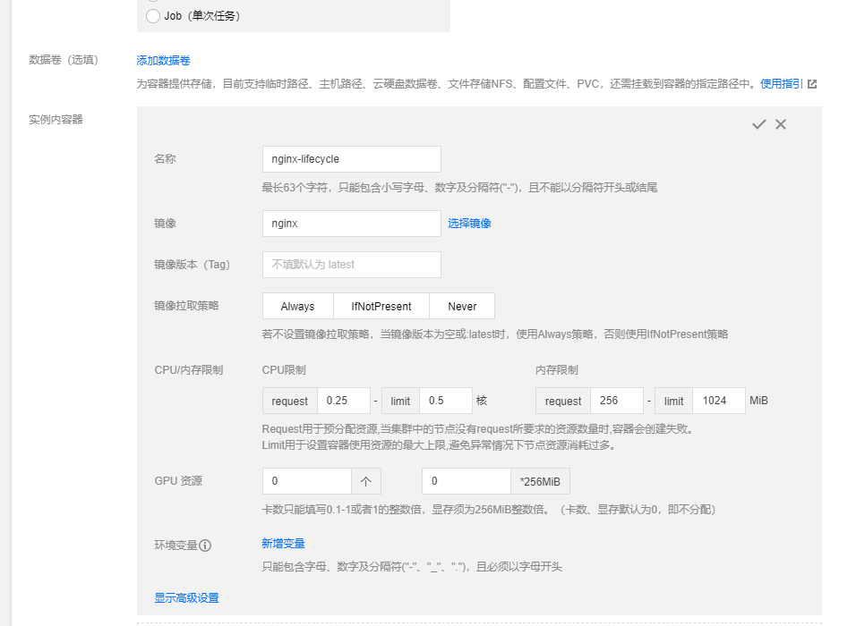
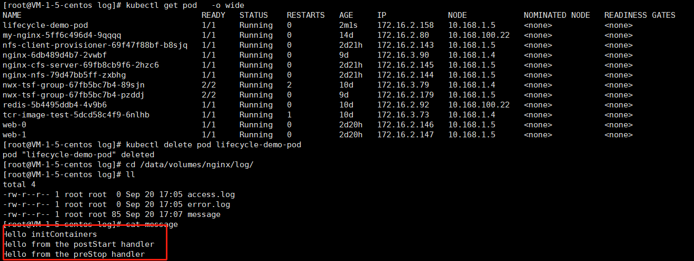

Kubernetes 支持 postStart 和 preStop 事件。 当一个容器启动后，Kubernetes 将立即发送 postStart 事件；在容器被终结之前， Kubernetes 将发送一个 preStop 事件。
使用限制
Kubernetes 在容器创建后立即发送 postStart 事件。 然而，postStart 处理函数的调用不保证早于容器的入口点（entrypoint） 的执行。postStart 处理函数与容器的代码是异步执行的，但 Kubernetes 的容器管理逻辑会一直阻塞等待 postStart 处理函数执行完毕。 只有 postStart 处理函数执行完毕，容器的状态才会变成 RUNNING。
Kubernetes 在容器结束前立即发送 preStop 事件。除非 Pod 宽限期限超时，Kubernetes 的容器管理逻辑 会一直阻塞等待 preStop 处理函数执行完毕。更多的相关细节，可以参阅 Pods 的结束。
Note: Kubernetes 只有在 Pod 结束（Terminated） 的时候才会发送 preStop 事件， 这意味着在 Pod 完成（Completed） 时 preStop 的事件处理逻辑不会被触发。这个限制在 issue #55087 中被追踪
总结一下就是三条：
- postStart无法保证函数执行才运行pod
- postStop会保证执行完函数后才销毁pod
- preStop只会在pod被Terminated才会被触发
yaml文件中的字段配置
lifecycle字段是.spec.containers.lifecycle
创建资源对象时，可以使用lifecycle来管理容器在运行前和关闭前的一些动作。
lifecycle有两种回调函数：
- PostStart：容器创建成功后，运行前的任务，用于资源部署、环境准备等。
- PreStop：在容器被终止前的任务，用于优雅关闭应用程序、通知其他系统等等
1 | apiVersion: v1 |
TKE中使用postStart 和preStop
TKE这边暂时不支持控制台配置postStart 和preStop，这边只能修改yaml来进行配置，如果您现在都是通过yaml部署，则只需要通过在yaml中添加字段lifecycle既可，如果是通过控制台部署，可以选择先部署工作负载，然后修改yaml重新部署既可。

先创建一个负载，然后再修改yaml文件
1 | ....... |
这边创建再删除pod，可以从日志中查看到对应输出

参考文档
https://kubernetes.io/zh/docs/tasks/configure-pod-container/attach-handler-lifecycle-event/

欢迎访问 Vashon 的博客，博客和文章在完善中，请大家耐心等待。 若有问题或者有好的建议欢迎留言，笔者看到之后会及时回复。